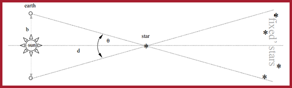

Measuring Distance Using Parallax
Trigonmetric Parallax Activity
Video |
 | Activity Overview |
In this activity, students will perform a measurment using the trigonometric parallax method.
Learning Objectives |
During this activity, students will:
- use a tripod mounted camera to take photos of a target;
- perform digital image analysis to determine the size of the camera's CCD;
- perform digital image analysis to determine a parallax angle; and
- calculate and plot the parallax distance to the target.
 | Equipment |
- Windows or Mac-based computer;
- ImageJ Software (free download);
- Spreadsheeting Software (e.g. Microsoft Excel, Google Sheets, and OpenOffice Calc);
- Three camera tripods;
- Digital camera;
- One meter ruler; and
- Plastic "target".
Activity Equipment: Tripod, meter ruler, plastic "target".
 | Activity Files |
Activity Worksheet
Activity Solutions
 | Background Information |
When staring up at the stars, have you ever wondered how far away they are? What do you think you’d have to do to measure that distance? Unfortunately, you can’t stretch a measuring tape between yourself and the stars, so we need another approach. While astronomers have developed several techniques, one of the most popular methods is known as trigonometric parallax, which relies on a star's apparent movement against the background of more distant stars as Earth revolves around the sun.
Let’s test parallax. First, close your right eye, and place your thumb over a distant object. Now, switch eyes, so that your left is closed, and your right is open. Your thumb will appear to shift slightly against the background. By measuring this movement and knowing the distance between your eyes, you can calculate the distance to your thumb.
Parallax with your thumb (Credit: Cupix Blog)
When performing this technique on a star, first a photograph of a star is taken six months apart so that the diameter of the Earth’s orbit around the Sun forms the baseline of a surveying triangle. The distance to a star is given by: $$d= {b/2 \over sin(\theta/2)}$$ In this case, \(d\) is the distance to the star and \(b\) is the length of the baseline, which is the known diameter of the Earth's orbit around the Sun (approx 300 million kilometers). The total angular shift of the star against the backdrop of more distance stars is \(\theta\). The parallax angle is designated as half of the total shift (i.e. \(\theta/2\)).
Measuring distances using the trigonometric parallax method.
In this experiment, you will perform a measurement using the trigonometric parallax method. The experiment is analogous to the method used in astronomy to measure distances to the local stars, but rather than waiting six months for the Earth to reposition, you will use two tripods with a camera, and a much closer object as a target. As for the backdrop of fixed stars, it’s recommended you use a distant building or mountain.
 | Acknowledgement |
Activity created by Michael Cowley, Macquarie University.